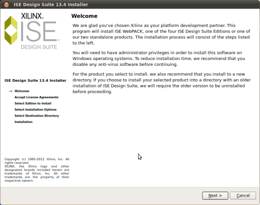
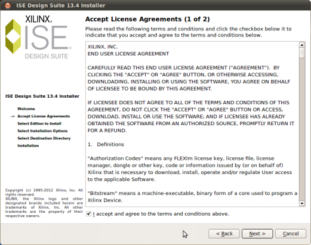
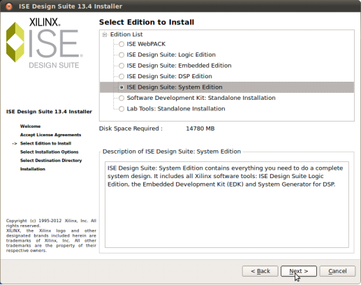
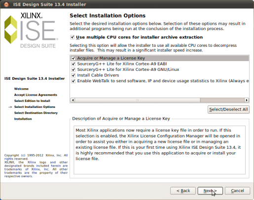
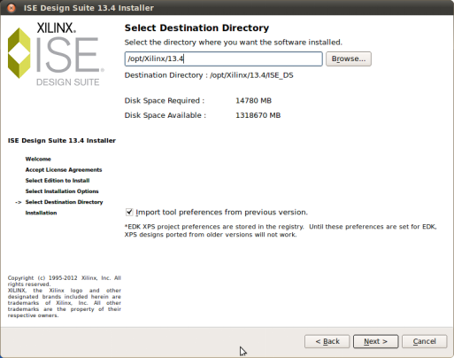
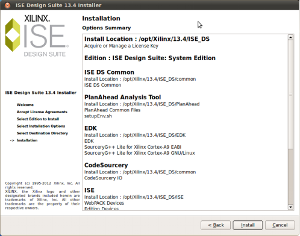
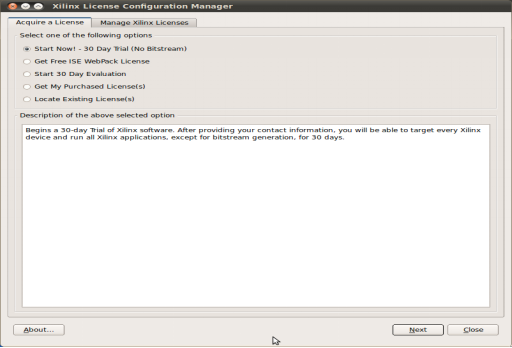
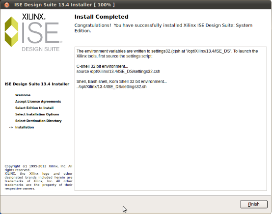
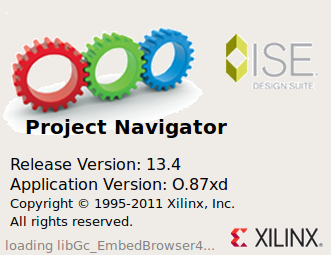
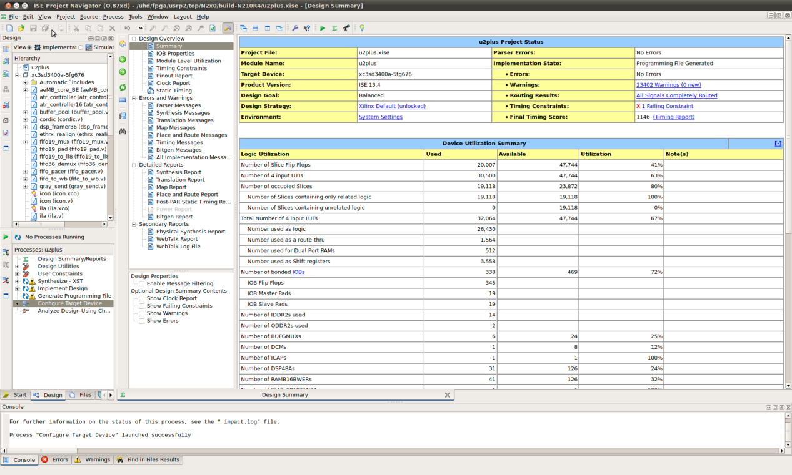

FPGA工具（Xilinx ISE）的安装
注：该软件我是在ubuntu（12.04）系统下安装的。
1.下载“Full Installer for Linux”（4.6GB）得到压缩包
“Xilinx_ISE_DS_Lin_13.4_O.87xd.3.0.tar”或者将已经有的
“Xilinx_ISE_DS_Lin_13.4_O.87xd.3.0.tar”复制粘贴到你的ubuntu系统下。
2.安装Xilinx_ISE_DS_Lin_13.4_O.87xd.3.0.tar
tar xvf Xilinx_ISE_DS_Lin_13.4_O.87xd.3.0.tar
cd Xilinx_ISE_DS_Lin_13.4_O.87xd.3.0
./setup
3.进入欢迎界面，next：

4.接受许可协议，点击“I accept……”

5.选择安装版本：

6.安装设置，默认：

7.选择安装软件的目录：

8.安装选项概要：

9.进行安装，请等待：
（1.安装过程中可能会提示电缆安装失败，可跳过，继续安。2.安装过程可能会出现是否安装Xilinx什么的窗口，点击安装。）

10.在Acquire a license中，点击Get Free ISE WebPack license然后Next->Connect Now,这时候应该会弹出获取证书的网页，根据提示生成一个Xilinx.lic的证书，此证书会发至你的邮箱。“close”,等待安装完成。（注：要是用它自带的.lic文件，如果找不到的话可以在终端中打入命令：find / -name *.lic 进行搜索，可以搜索到相应的文件，然后进行Copy License…。）

11.完成安装界面：

12.安装结束后，进入目录，先运行一个shell文件，配置环境变量，然后运行ISE：
$cd /opt/Xilinx/13.4/ISE_DS
$source settings32.sh
$ise
（注：每次运行软件都要运行$source settings32.sh $ise）
在ISE中选择Help->Manage License…->Acquire a License->Get Free ISE WebPack License->Next->Connect Now->Copy License…,然后选择刚生成的证书，此时即可编译程序，但无法下载之开发板，需要安装电缆驱动。
ISE电缆驱动安装方法：
1、下载驱动源码并解压，地址：
http://cvs.zerfleddert.de/cgi-bin/viewcvs.cgi/usb-driver.tar.gz
$sudo tar xvfz usb-driver-HEAD-2d19c7c.tar.gz
2、安装libusb库
$sudo apt-get install libusb-dev
3、进入usb-driver-HEAD-2d19c7c目录
$sudo make
4、将所生成的.so文件拷贝到某个path下，例如/usr/local/lib
$sudo cp libusb-driver.so libusb-driber-DEBUG.so /usr/local/lib
5、配置环境变量export LD_PRELOAD=/usr/local/lib/libusb-driver.so
$cd /etc
$sudo vim bash.bashrc
6、将这句话加在文件的最后面
export LD_PRELOAD=/usr/local/lib/libusb-driver.so
7、复制udev协议以适应新版本的udev文件。
（不要轻易修改50这个数字，这个与加载顺序有关。如果你的机器中已经有以50开头的rules，就请把这里的50往后顺延，比如51,52等等）
$sudo cp /opt/Xilinx/13.2/ISE_DS/ISE/bin/lin/xusbdfwu.rules
/etc/udev/rules.d/50-xusbdfwu.rules
8、用不同的Xilinx电缆复制hex文件到/usr/share/中并且使之对于普通用户可读。
$sudo cp /opt/Xilinx/13.2/ISE_DS/ISE/bin/lin/xusb*.hex /usr/share/
$sudo sed -i -e 's/TEMPNODE/tempnode/' -e 's/SYSFS/ATTRS/g' -e 's/BUS/SUBSYSTEMS/'
/etc/udev/rules.d/50-xusbdfwu.rules
9、安装fxload:
$sudo apt-get install fxload
10、重启udev:
$sudo restart udev
11、为了编译planAhead 必须对两个脚本文件进行编译。
sudo sed -i -e 's/#!\/bin\/sh/#!\/bin\/bash/'
/opt/Xilinx/12.2/ISE_DS/PlanAhead/bin/planAhead
sudo sed -i -e 's/#!\/bin\/sh/#!\/bin\/bash/'
/opt/Xilinx/12.2/ISE_DS/PlanAhead/bin/loader
12、运行下面命令，如下图正确启动ISE软件
$cd /opt/Xilinx/13.4/ISE_DS
$source settings32.sh
$ise

